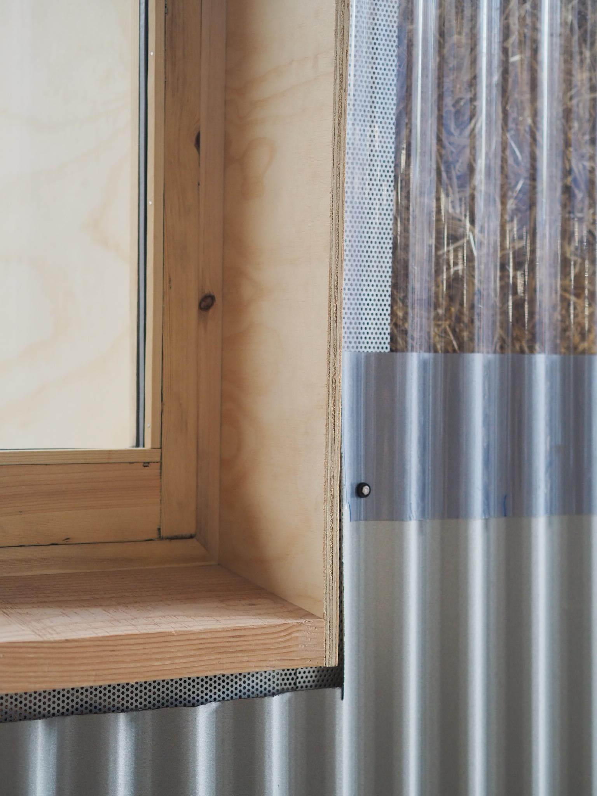
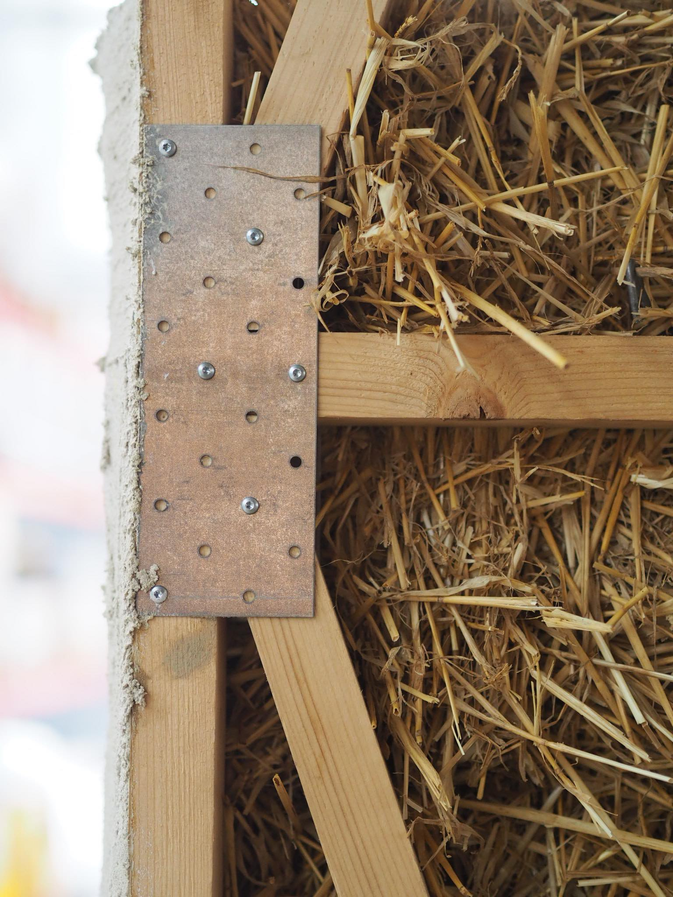
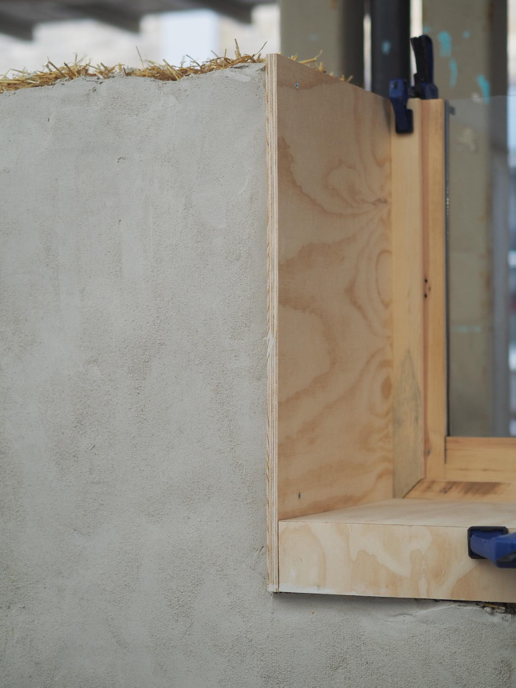
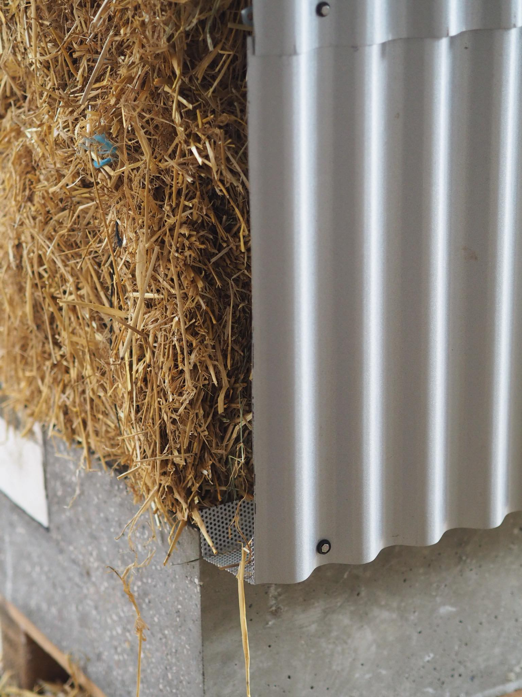
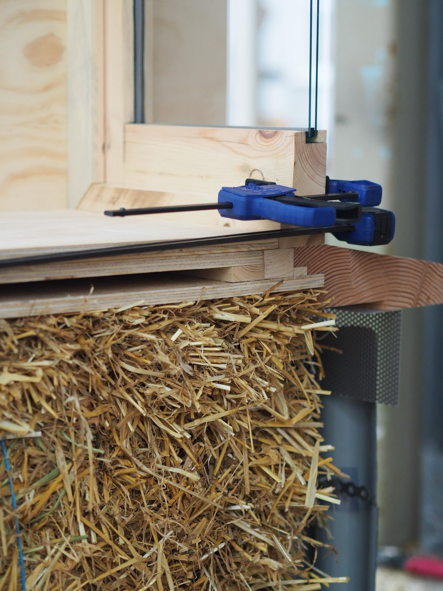

Face aux exigences de la transition écologique, l’architecture cherche de nouveaux repères. La Straw Bale House en constitue un : la preuve par la matière qu’un autre mode constructif est possible.
En reproduisant à l’échelle 1:1 une section de cette œuvre emblématique pendant trois semaines de travail manuel, le projet s’est affranchi du dessin pour s’ancrer dans le réel. Manipuler le ballot de paille pour apprivoiser une technique où la simplicité du matériau brut répond à la complexité des enjeux thermiques actuels.
Cette expérience vient-elle sceller une certitude ? Et si l’alternative bas-carbone abandonnait la théorie pour s’édifier par l’expérimentation, main à main ?





